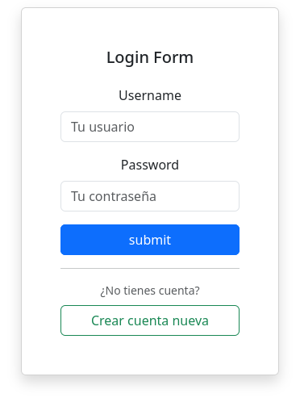
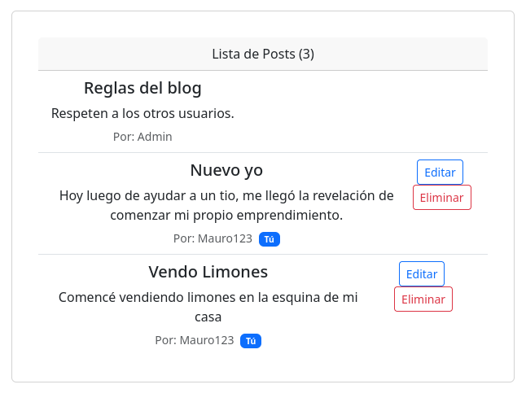

Visualización de Arquitectura Nivel 2 (C4 Model)
Diseño orientado a la separación de responsabilidades, garantizando que el flujo de datos sea seguro desde la persistencia hasta el cliente final.
El Desafío
Seguridad y Propiedad de Datos
El problema central no era solo crear un CRUD, sino implementar una lógica para asegurar que un usuario autenticado no pudiera manipular recursos de otros, manteniendo la integridad del sistema sin comprometer la experiencia de usuario.
Implementación Técnica
Desarrollé un Custom Security Filter que intercepta las peticiones `PUT/DELETE`. El flujo funciona así:
- 01. Extracción del Subject desde el JWT Token.
- 02. Validación cruzada entre el ID del autor del Post y el ID del usuario en sesión.
- 03. Bypass total otorgado únicamente al rol ADMIN para moderación.
Funcionamiento del Sistema
Un recorrido visual por la interfaz y sus capacidades.

Gestión de Sesión
Implementación de JWT con persistencia en LocalStorage y manejo de estados globales en React.

Control Dinámico de UI
Botones de edición ocultos mediante lógica condicional que espeja la seguridad del Backend.
Tecnologías Aplicadas
Spring Boot
Uso de Spring Security para el filtrado de JWT y Spring Data JPA para la gestión eficiente de la DB.
Testing
Pruebas unitarias con JUnit 5 y Mockito para asegurar que la lógica de permisos no falle ante cambios.
Dockerization
Contenerización de la app y la DB para garantizar un despliegue consistente en cualquier entorno.